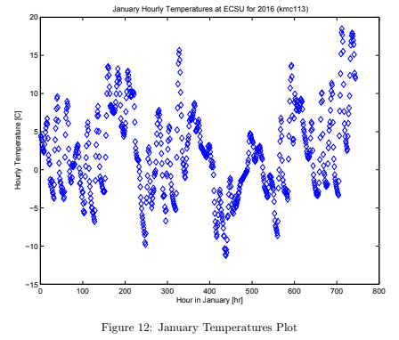
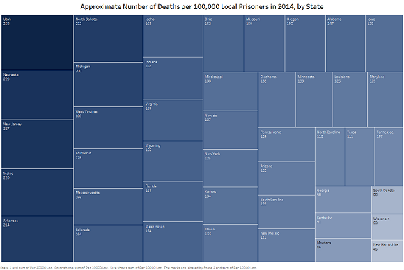
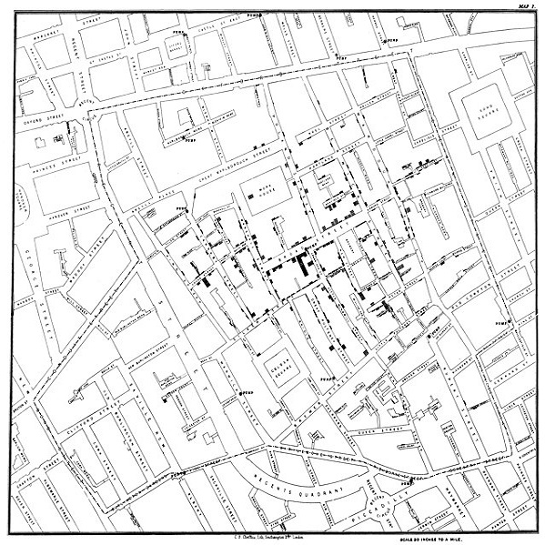
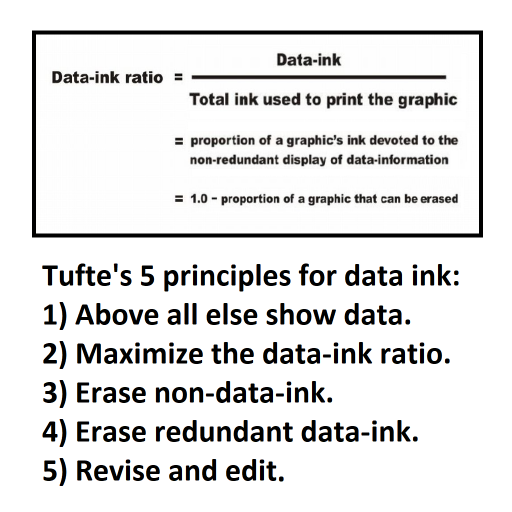
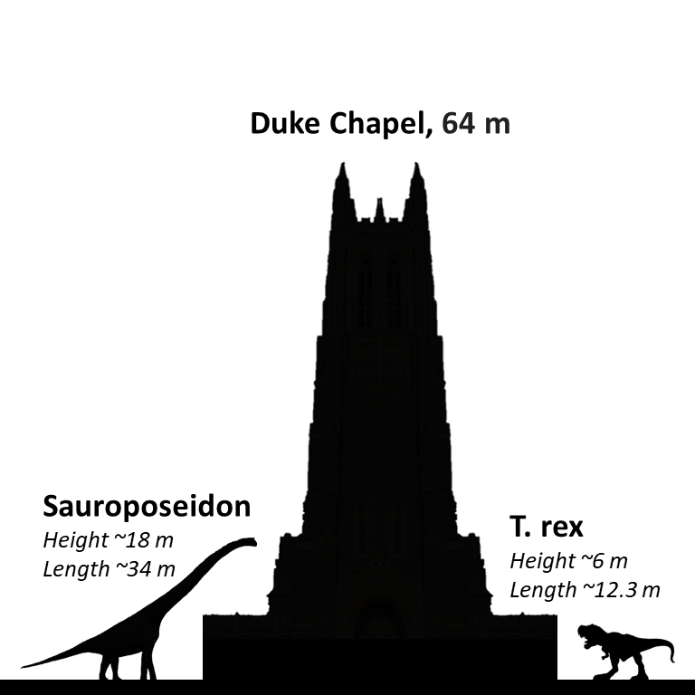
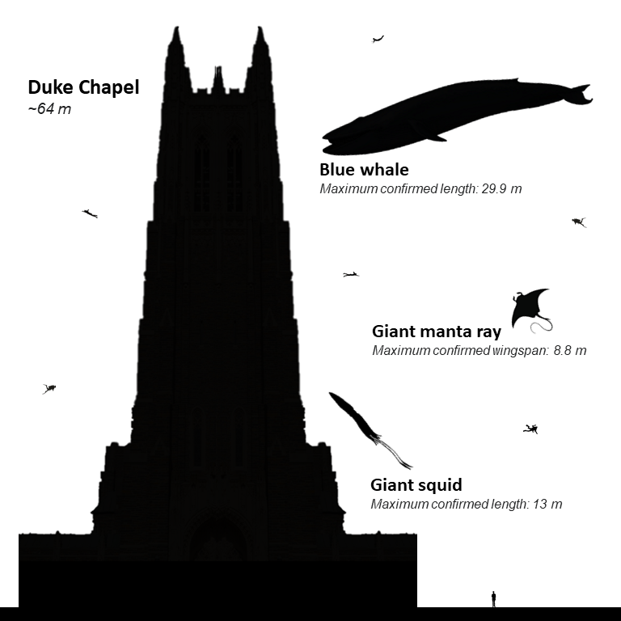
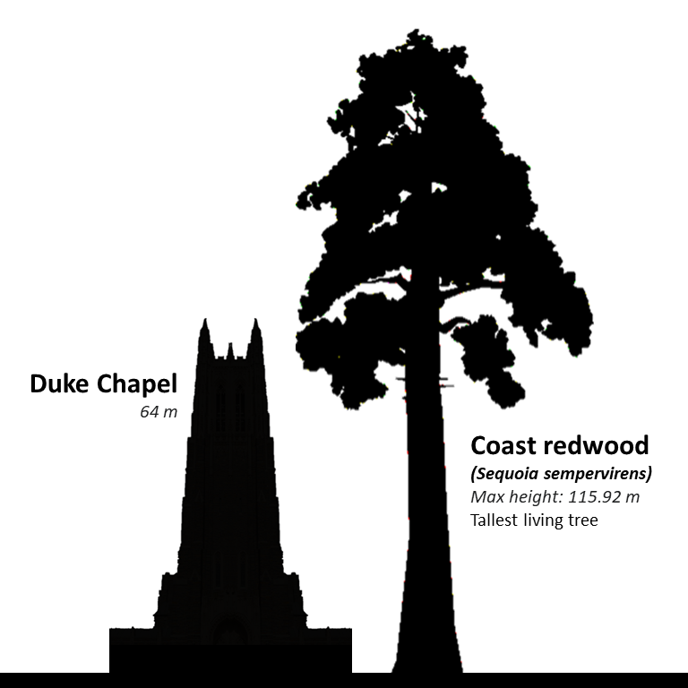
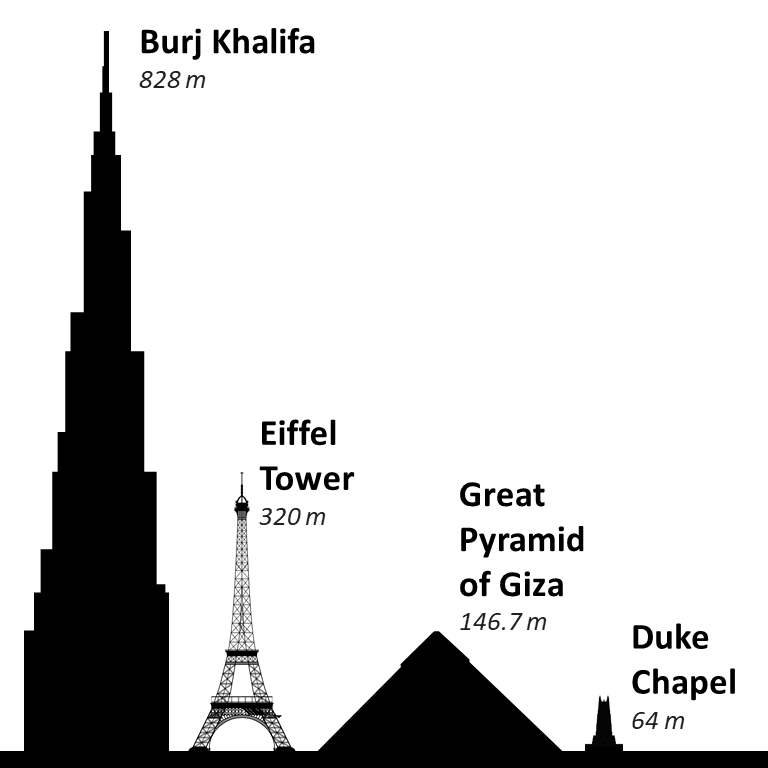
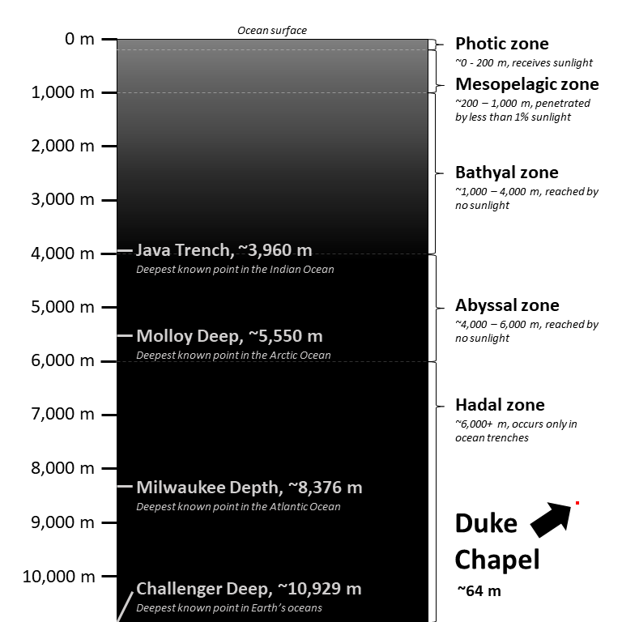

Data visualization is exactly what it sounds like: visual representation of data! Data visualization is a great way to present a digestible overview of many data points so that viewers can see trends and relationships for themselves.
There are tons of types of data visualizations, and tons of ways to create them! Most programming languages can be used to process data and create simple visualizations, especially with the help of libraries. My main experience with creating data visualizations through code has been in MATLAB, Python, and R.
MATLAB has many built-in libraries for graphics and data visualization, making it a simple task to plot all kinds of charts and graphs. For more information on my experience with MATLAB, see the My MATLAB Skills tab.
In Python, I have mainly used the libraries Matplotlib and pandas to create simple graphs for data visualization. For more information on my experience with Python, see the My Python Skills tab.
R has many packages developed for data science. I have primarily used the R package Shiny to build reactive dashboards that allow the user to explore datasets for themselves. Those websites are the ELA Interactive Data Site (2019) and Blue Devil Breakdown (2020). I have also used packages from the Tidyverse such as ggplot2 to create graphs. For more information on my experience with R and Shiny, see the My R Skills tab.
There are also many software that come with more user-friendly data visualization capabilities that require little to no programming. I have experience creating visualizations with:
Tableau - Tableau is a software designed specifically for data visualization! Though Tableau is marketed particularly for business intelligence applications, Tableau is an easy way to create clear, visually pleasing, and even interactive plots.
ArcGIS - ArcGIS is a powerful software that allows users to create geographic visualizations using the built-in geographic information system. ArcGIS can be used to represent any type of geospatial data, and can even be used to host web apps and notebooks.
Excel - An oldie but a goodie, Microsoft Excel is a great tool for creating quick visualizations of tabular data. For a more professional, visually pleasing product, Power BI is another free option that supplements Excel’s data visualization capabilities.
Lastly, there’s a lot of history and theory behind good visualization! To build a knowledge of these, I have studied the work of pioneers like Jon Snow, Edward Tufte, and Stephen Few.
 Everyone who attends Duke passes the iconic Duke Chapel at least a few times a day, so I thought it would be interesting to show the scale of some large objects next to the chapel. I easily created an Excel sheet with formulas to convert the heights of the chapel and other objects to pixel heights, and created and scaled these images using Adobe Photoshop.
    